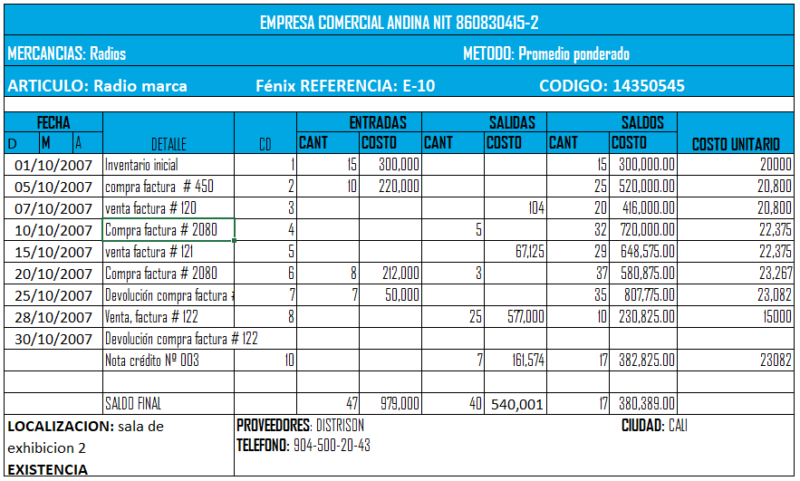

A la hora de realizar la valuación de inventarios, el promedio ponderado es uno de los métodos comúnmente más utilizados, pues permite tener conocimiento en todo momento del promedio de los diferentes precios pagados.
Si quiere ver mas a detalle el mapa conceptual dar click en la imagen